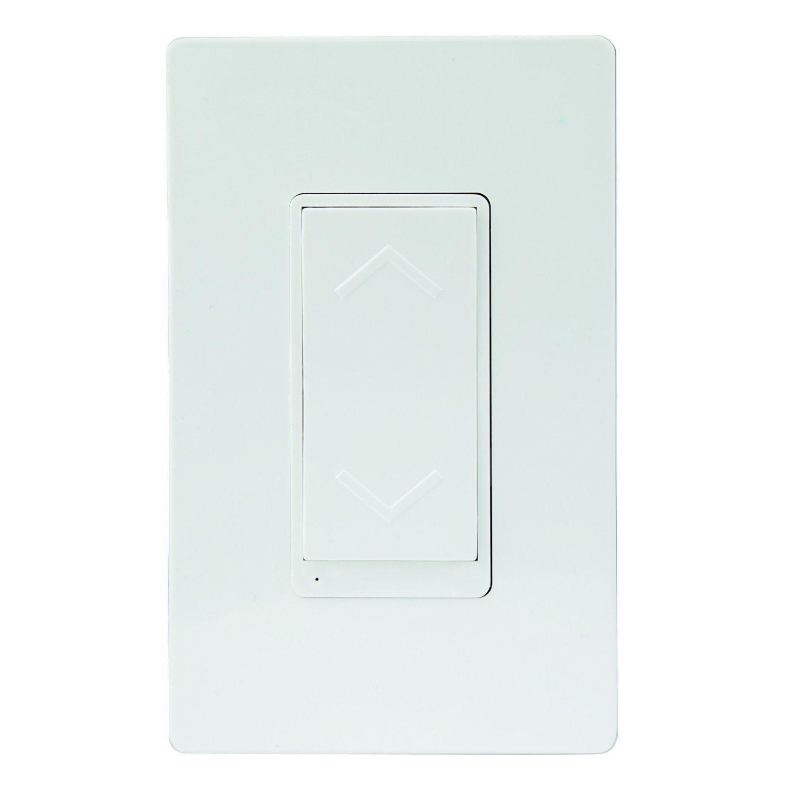
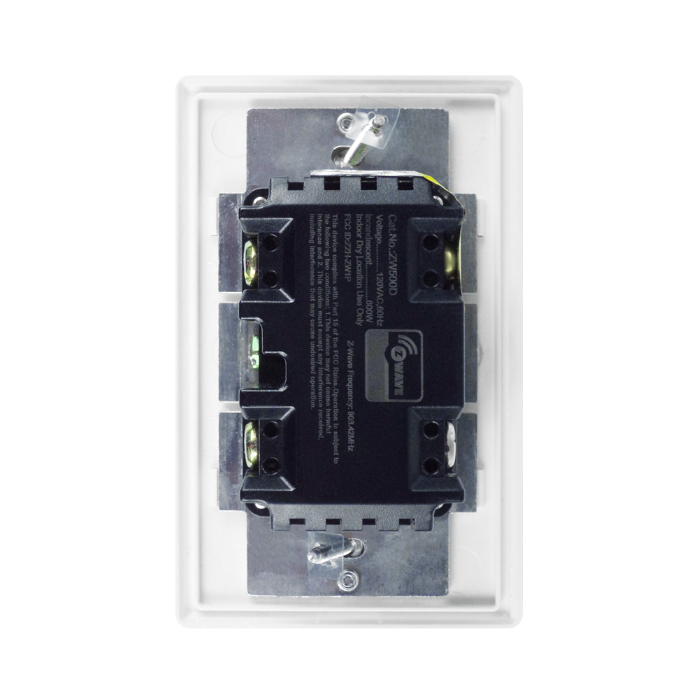

Enerwave ZW500D-W Z-Wave Dimmer Switch In-Wall Wireless¶

Basic operation¶
- Replace Your Current Wall Switch or Dimmer to Enable Wireless Dimming ON/OFF Control After Paired to Z-Wave Network. This Device is Fully Compatible and Interoperable with other Z-Wave Compliant Devices and Controllers.
- Manual & Remote ON/OFF Dimming Control of all Dimmable Lamps Including Incandescent, LED, Halogen & CFL. The Preset Light Level Feature Allows the Dimmer to Turn the Light on At the Previous Level Before it was Turned Off.
- Single Pole (Single Location) or 3-Way (Multi-Location) Allows you to Control Lighting From Multiple Locations Manually with a Button Press, or with your Z-Wave Remote (PC Mac Web App, Smart Phone App, Internet Connected Tablet App)
- This Dimmer Switch can be added in a Z-Wave Association Role such as Double Tapping the Button to Turn ON/OFF light and Another Appliance Together. This can be Programmed by your Z-Wave Controller/Hub.
- NEUTRAL WIRE REQUIRED 120VAC, 60Hz, 500W, 908.42MHz (Z-Wave Network Frequency) Air-Gap Switch Meets UL Requirements. LED indicator, 100ft Z-Wave Range - Acts as a Z-Wave Repeater to Extend the Range of your Z-Wave Signal up to 100ft. Includes a two year manufacturer’s warranty. Manufactured in a ISO9001 Registered Facility.
How to add to VENUS app¶

- 1. Activation
- Press “Add button” (button ‘+’) in app
- Press the ON/OFF button
- Wait for VENUS scan & detect this device and inform in app
- 2. Reset then re-add
- Press “Add button” (button ‘+’) in app
- Press the ON/OFF button (to reset)
- Press the ON/OFF button one more time (to add)
- Wait for VENUS scan & detect this device and inform in app
How to add/remove associated device(s) to¶
This devive can support single association group with up to 5 target nodes.
To add associated device(s) to this sensor, below action is required:
- Add z-wave notified-devices (which will be associated to this sensor) to VENUS
- Select Associate button and then select notified-device(s) to add
- Short press ON/OFF button once
- If successful, pop-up notification displays in VENUS app
To remove associated device(s) from this sensor, below action is required:
- Select Associate button and then select notified-device(s) to remove
- Short press ON/OFF button once
- If successful, pop-up notification displays in VENUS app
Configuration description¶
Configuration LED indicator reverse
Available 0: Turn light ON, LED indicator OFF 1: Turn light ON, LED indicator ON Default 0 Configuration button reverse
Available 0: Top button is ON button, bottom button is OFF button 1: Top button is OFF button, bottom button is ON button Default 0